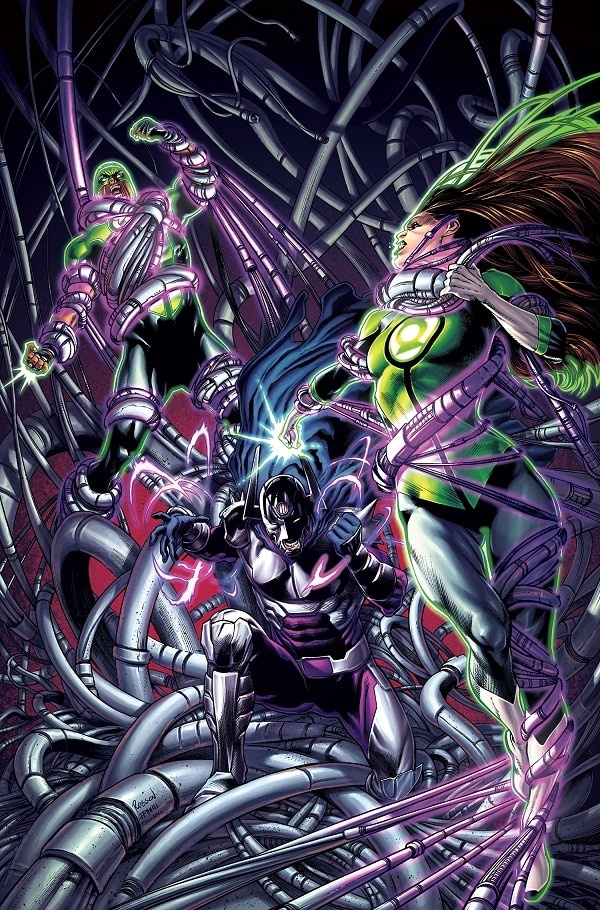

Powers of the Ring · Mainstream comics
Protection & Healing
Surviving danger, treating an injury, and restoring life are different feats.

Simon and Doctor Polaris share a desire to help family. Their choices take different paths.
Green Lanterns #20 (2017), cover by Robson Rocha and Daniel Henriques. © DC. Publisher cover credits; image from DC's Sam Humphries interview. This is cover art for the story discussed below, not a panel depicting Simon healing Nazir. Image provenance.
A shield is not a cure
Rings give Lanterns protective fields and let them operate in environments that would otherwise be lethal. That protection should not be confused with automatic regeneration. A working ring does not guarantee that every wound will close, every poison will vanish, or its bearer will survive indefinitely without support.
The limitation is present in the origin of Hal Jordan. In Showcase #22 (1959), the injured Abin Sur needs a successor before he dies. DC's retrospective on the issue describes that handover. Possession of the ring has not made Abin immune to a fatal injury.
Simon Baz: a meaningful exception
Simon Baz is a useful example of healing as a particular character's achievement. DC's character profile specifically lists healing among his abilities. His success in helping his brother-in-law Nazir later becomes a point of comparison with Doctor Polaris' attempt to save his own brother.
That comparison is discussed directly in DC's interview with writer Sam Humphries about Green Lanterns #19–20. Treat Simon's feat as a story worth exploring, rather than evidence that all green rings provide effortless medical miracles.
Why the white light is a separate category
The resurrection premise of Brightest Day belongs to the white light of life. DC's collection description links that return to white light. It should not be listed as a routine ability of a standard Green Lantern ring.
When comparing feats, name the bearer, the ring or power source, and the issue. This keeps ordinary protection, exceptional healing, and event-level resurrection from becoming a single misleading promise.
Read next
- Showcase #22 — Hal's origin and Abin Sur's final mission.
- Green Lanterns #19–20 (2017) — Simon, Doctor Polaris, and the desire to save a family member.
- Brightest Day #0–24 — the separate mystery of the white light; read Blackest Night first.
Sources: linked DC character profile, issue retrospective, creator interview, and collection listing. Reviewed November 4, 2026. Includes premise-level references to Abin Sur's fate and the aftermath of Blackest Night.